pacman::p_load(sf, sp, sfdep, tmap, tidyverse, ggplot2)Take Home Exercise 2: Application of Spatial and Spatio-temporal Analysis Methods to Discover the Distribution of Dengue Fever in Tainan City, Taiwan
Background
It has been reported that Taiwan had a very high record of dengue fever cases of 26703 in the year 2023. This is the worst outbreak case since 2015, where Taiwan faced the worst dengue fever outbreak with 43,000 dengue cases and 228 deaths. It is reported that more than 80% of the cases occurred in the months fo August to November of 2023 and during the epidemiology week 31 to 50. Most of these dengue cases are reported at Tainan City.
Motivation
As there is a sudden dengue fever outbreak in Taiwan after years of having cases below 200, we need to investigate further if such an outbreak has any correlation with the region that is happening, the time that the outbreak happened, or both. This investigation can help in further understanding the cause of such an outbreak as well as a step to know how to prevent such an outbreak from happening again.
Packages
- sf - for importing and handling geospatial data in R
- tidyverse - for wrangling attribute data in R
- sfdep - for computing spatial weights, global and local spatial autocorrelation statistics
- tmap - prepare cartographic quality choropleth map
Data
Aspatial Data
Dengue_Daily.csv
- This is an aspatial data of the reported dengue cases in Taiwan since 1998
dengue <- read_csv("data/aspatial/Dengue_Daily.csv")Geospatial Data
TAIWAN_VILLAGE_2020
- This is a geospatial data of the village boundaries of Taiwan in the form of an ESRI shapefile format. It is already in the Taiwan Geographic Coordinate System.
Reading layer `TAINAN_VILLAGE' from data source
`C:\Users\emily\OneDrive\Documents\SMU\Y3S2\Geospatial Analysis\IS415-GAA\Take-home_Ex\Take-home_Ex02\data\geospatial\TAINAN_VILLAGE.shp'
using driver `ESRI Shapefile'
Simple feature collection with 649 features and 10 fields
Geometry type: POLYGON
Dimension: XY
Bounding box: xmin: 120.0269 ymin: 22.88751 xmax: 120.6563 ymax: 23.41374
Geodetic CRS: TWD97Data Preprocessing
Aspatial Data
Filter by Dates of the Epidemiology Week
We are only interested in the epidemiology week 31 to 50 in the year 2023, which is when most of the dengue cases are happening. There is a function from lubridate, epiweek(), which can give the epidemiology week of the specific year. As such, we will use mutate() and epiweek() to create a column, epiweek, to identify the epidemiology week of the dates, and then using the filter() function to filter the data that has the epidemiology week of 31 to 50 in the year 2023.
dengue <- dengue |>
mutate(EPIWEEK = epiweek(發病日)) |>
filter(year(發病日) == 2023 & between(EPIWEEK, 31, 50))Remove Unused Columns
In this case study, we want to focus more on the locations of where the cases occur. As such, there are only 4 columns that we will require, which are:
發病日: Onset date
最小統計區中心點X: x-coordinate (longitude)
最小統計區中心點Y: y-coordinate (latitude)
epiweek: the epidemiology week of the case
dengue <- dengue |>
select(發病日, 最小統計區中心點X, 最小統計區中心點Y, EPIWEEK)Checking and Handling of Missing Data
Let us now check for rows that contains any missing values.
colSums(is.na(dengue)) 發病日 最小統計區中心點X 最小統計區中心點Y EPIWEEK
0 0 0 0 From the output above, we can see that there are 0 rows that contains missing coordinates. However, we need to see if there are rows that contains any “None” strings.
dengue_None <- dengue |>
filter(最小統計區中心點X == "None" | 最小統計區中心點Y == "None")
glimpse(dengue_None)Rows: 14
Columns: 4
$ 發病日 <date> 2023-08-18, 2023-08-24, 2023-09-15, 2023-09-15, 202…
$ 最小統計區中心點X <chr> "None", "None", "None", "None", "None", "None", "Non…
$ 最小統計區中心點Y <chr> "None", "None", "None", "None", "None", "None", "Non…
$ EPIWEEK <dbl> 33, 34, 37, 37, 38, 38, 39, 39, 39, 42, 42, 43, 43, …It is shown that there are a total of 14 rows that have missing coordinates. This is a very small portion of the dataset. As such, let us just remove the 14 rows from the dataset.
dengue <- dengue |>
filter(最小統計區中心點X != "None" | 最小統計區中心點Y != "None")Change the Data Type of the x and y coordinates
When we look at the glimpse() of the dengue dataframe, the type of data for the x and y coordinates are <chr>.
glimpse(dengue)Rows: 25,461
Columns: 4
$ 發病日 <date> 2023-07-30, 2023-07-30, 2023-07-30, 2023-07-30, 202…
$ 最小統計區中心點X <chr> "120.220182286", "120.218036763", "120.235449178", "…
$ 最小統計區中心點Y <chr> "22.976075790", "22.980068070", "23.013736726", "23.…
$ EPIWEEK <dbl> 31, 31, 31, 31, 31, 31, 31, 31, 31, 31, 31, 31, 31, …As such, we need to change these columns into a numerical type or <dbl> using the mutate_at() and as.numeric() function.
dengue <- dengue |>
mutate_at(c('最小統計區中心點X', '最小統計區中心點Y'),as.numeric)
glimpse(dengue)Rows: 25,461
Columns: 4
$ 發病日 <date> 2023-07-30, 2023-07-30, 2023-07-30, 2023-07-30, 202…
$ 最小統計區中心點X <dbl> 120.2202, 120.2180, 120.2354, 120.2456, 120.2465, 12…
$ 最小統計區中心點Y <dbl> 22.97608, 22.98007, 23.01374, 23.01932, 23.01821, 23…
$ EPIWEEK <dbl> 31, 31, 31, 31, 31, 31, 31, 31, 31, 31, 31, 31, 31, …Change the Dengue Dataset into sf
To know where the coordinate of the dengue cases lies on the map, we need to change the dengue dataset into a sf object to get the point data of each dengue case. However, we need to ensure that the projection system of the Tainan geospatial data and the dengue dataset are the same. As such, let us take a look at the projection system that is used by the Tainan dataset.
st_crs(tainan)Coordinate Reference System:
User input: TWD97
wkt:
GEOGCRS["TWD97",
DATUM["Taiwan Datum 1997",
ELLIPSOID["GRS 1980",6378137,298.257222101,
LENGTHUNIT["metre",1]]],
PRIMEM["Greenwich",0,
ANGLEUNIT["degree",0.0174532925199433]],
CS[ellipsoidal,2],
AXIS["geodetic latitude (Lat)",north,
ORDER[1],
ANGLEUNIT["degree",0.0174532925199433]],
AXIS["geodetic longitude (Lon)",east,
ORDER[2],
ANGLEUNIT["degree",0.0174532925199433]],
USAGE[
SCOPE["Horizontal component of 3D system."],
AREA["Taiwan, Republic of China - onshore and offshore - Taiwan Island, Penghu (Pescadores) Islands."],
BBOX[17.36,114.32,26.96,123.61]],
ID["EPSG",3824]]Now we know that the Tainan geospatial data is set on the TWD97 with EPSG:3824. So, let’s use st_as_sf() function to change the dengue dataset into a sf object and use st_transform() to change the projection to EPSG:3824.
dengue_sf <- st_as_sf(dengue,
coords = c("最小統計區中心點X", "最小統計區中心點Y"),
crs = 4326) |>
st_transform(crs = 3824)
st_crs(dengue_sf)Coordinate Reference System:
User input: EPSG:3824
wkt:
GEOGCRS["TWD97",
DATUM["Taiwan Datum 1997",
ELLIPSOID["GRS 1980",6378137,298.257222101,
LENGTHUNIT["metre",1]]],
PRIMEM["Greenwich",0,
ANGLEUNIT["degree",0.0174532925199433]],
CS[ellipsoidal,2],
AXIS["geodetic latitude (Lat)",north,
ORDER[1],
ANGLEUNIT["degree",0.0174532925199433]],
AXIS["geodetic longitude (Lon)",east,
ORDER[2],
ANGLEUNIT["degree",0.0174532925199433]],
USAGE[
SCOPE["Horizontal component of 3D system."],
AREA["Taiwan, Republic of China - onshore and offshore - Taiwan Island, Penghu (Pescadores) Islands."],
BBOX[17.36,114.32,26.96,123.61]],
ID["EPSG",3824]]Geospatial Data
Inspect and Narrow Down the Area of Focus
First, let’s see what the Tainan dataset looks like.
tmap_mode("plot")
qtm(tainan)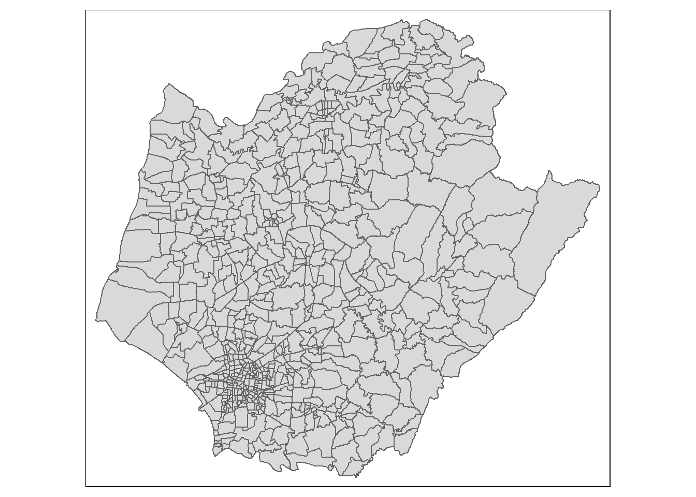
The plot shows the map of the whole Tainan City. However, we want to focus more on the villages and are confined to the D01, D02, D04, D06, D07, D08, D32 and D39 counties of Tainan City.
tainan <- tainan |>
filter(TOWNID %in% c('D01', 'D02', 'D04', 'D06', 'D07', 'D08', 'D32', 'D39'))
qtm(tainan)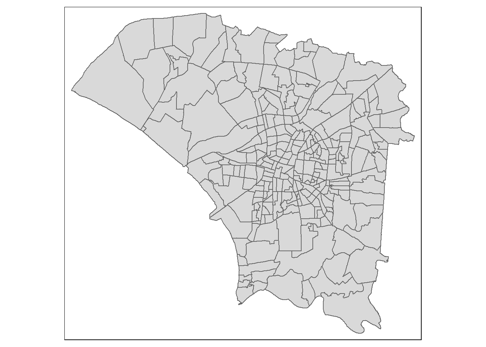
tm_shape(tainan) +
tm_fill(col="TOWNID") +
tm_borders()
Setting the Boundaries
Now we have gotten the villages that we want. It is time for us to set the big area boundary to be able to find the dengue cases that are within the area of interest.
tainan_sf <- st_union(tainan)
plot(tainan_sf)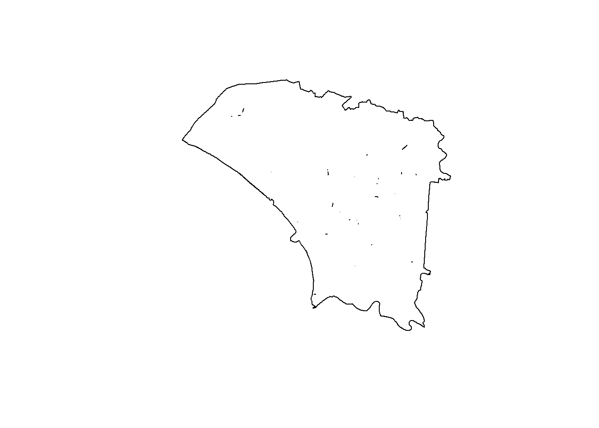
Combining Aspatial Data and Geospatial Data
Find Dengue Cases within the Focus Area
Upon further investigation, the data points of the dengue dataset lies all around Taiwan. As such, we need to narrow down the data points into the counties that we have selected.
dengue_vill_sf <- st_intersection(dengue_sf, tainan)
glimpse(dengue_vill_sf)
saveRDS(dengue_vill_sf, file = "rds/dengue_vill_sf.rds")dengue_vill_sf <- readRDS("rds/dengue_vill_sf.rds")Exploratory Data Analysis
Before diving further into finding the global and local spatial autocorrelation, let us take a further look on the distribution of the dengue cases.
Plot time series graph on the cases
Since this is a time-series data and we want to know further about the cases that happened over the course of the year, let us plot the time-series graph.
dengue_time <- dengue |>
group_by(發病日) |>
summarise(n = n())
glimpse(dengue_time)Rows: 140
Columns: 2
$ 發病日 <date> 2023-07-30, 2023-07-31, 2023-08-01, 2023-08-02, 2023-08-03, 20…
$ n <int> 23, 42, 45, 45, 49, 49, 58, 65, 77, 69, 67, 56, 79, 72, 71, 74,…ggplot(dengue_time, aes(x = 發病日, y = n)) +
geom_line()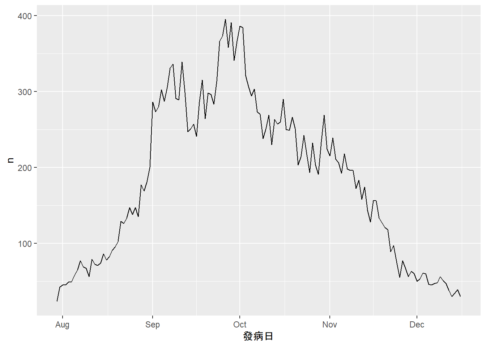
As we can see in the graph, the dengue cases mostly happen between September to mid-November, with it’s peak in October. This may be due to the rainy season in October, such that there are plenty of spaces for the Aides aegypti mosquitos to breed. We will further inspect whether the dengue cases is dependent on time.
Plot heat map on the graph to see the area that is concentrated on having the dengue cases
Next, let take a look at the distribution of the location where the dengue cases are happening. We can plot the points of the cases in the Tainan map.
tmap_mode("plot")
tm_shape(tainan_sf) +
tm_fill() +
tm_borders() +
tm_shape(dengue_vill_sf) +
tm_dots()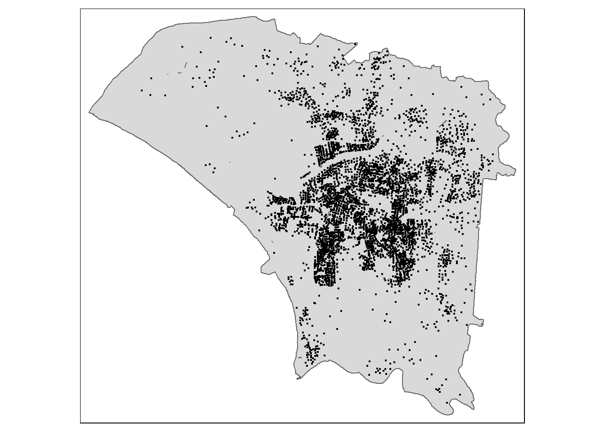
As we can see from the plot above, most of the cases are happening in the central of map, meaning that the spread of the dengue cases may be location-based.
From the two speculations made above, let us further analyse whether there are any spatial and spatio-temporal relationship of the dengue cases.
Global Measures of Spatial Autocorrelation
First of all, before we start with the global spatial autocorrelation, we need to find the number of dengue cases in each village.
dengue_village <- st_join(tainan, dengue_sf) |>
group_by(VILLCODE) |>
summarise(num_cases = n())Computing Continguity Spatial Weights and create row-standardised weights matrix
After finding the number of cases in each village, we need to compute the spatial weights matrix. We will use the st_contiguity() function to compute the contiguity spatial weights and the st_weights() function to create the row-standardised weights matrix.
wm_q <- dengue_village |>
mutate(nb = st_contiguity(geometry),
wt = st_weights(nb,
style = "W"),
.before = 1)With the spatial weights matrix, we can now compute the global spatial autocorrelation statistics.
Moran’s I
Moran’s I test
Now, let’s compute the Moran’s I using the global_moran() function from the sfdep package. We will use the num_cases as the attribute data, nb as the spatial weights matrix, and wt as the row-standardised weights matrix.
moran <- global_moran_test(wm_q$num_cases,
wm_q$nb,
wm_q$wt)
moran
Moran I test under randomisation
data: x
weights: listw
Moran I statistic standard deviate = 12.867, p-value < 2.2e-16
alternative hypothesis: greater
sample estimates:
Moran I statistic Expectation Variance
0.468299777 -0.003891051 0.001346736 As we can see from the result, the Moran’s I value is 0.46830, which is positive, and a very small p-value, which is lower than 2.2e-16. This means that there is a positive spatial correlation between the dengue cases in the villages in Tainan City. Moreover, the expectation of the Moran I statistic when there is no spatial correlation is lower than the Moran I statistic, indicating that there is spatial clustering. However, this is only one test that we did, such that this result might be random and not a representative of the actual spatial autocorrelation. As such, we need to do a Monte Carlo simulation to test the significance of the Moran’s I value.
Monte Carlo Moran’s I
Now, let’s compute the Moran’s I using the global_moran_perm() function from the sfdep package. We will set a number of 999 for the number of simulations.
set.seed(19)
mperm <- global_moran_perm(wm_q$num_cases,
wm_q$nb,
wm_q$wt,
nsim = 999)
mperm
Monte-Carlo simulation of Moran I
data: x
weights: listw
number of simulations + 1: 1000
statistic = 0.4683, observed rank = 1000, p-value < 2.2e-16
alternative hypothesis: two.sidedFrom the result above, we can see that the statistic value is equal to the first test that we did and it is ranked as the 1000 observed values. This means that the observation has the highest Moran I value from the 999 randomly simulated observations. The very low p-value of 2.2e-16 also signifies that our previous claim is justified, that there is a positive spatial autocorrelation for the dengue cases in the villages of Tainan City.
hist(mperm$res,
freq=TRUE,
breaks=30,
xlab="Simulated Moran's I")
abline(v=0,
col="red") 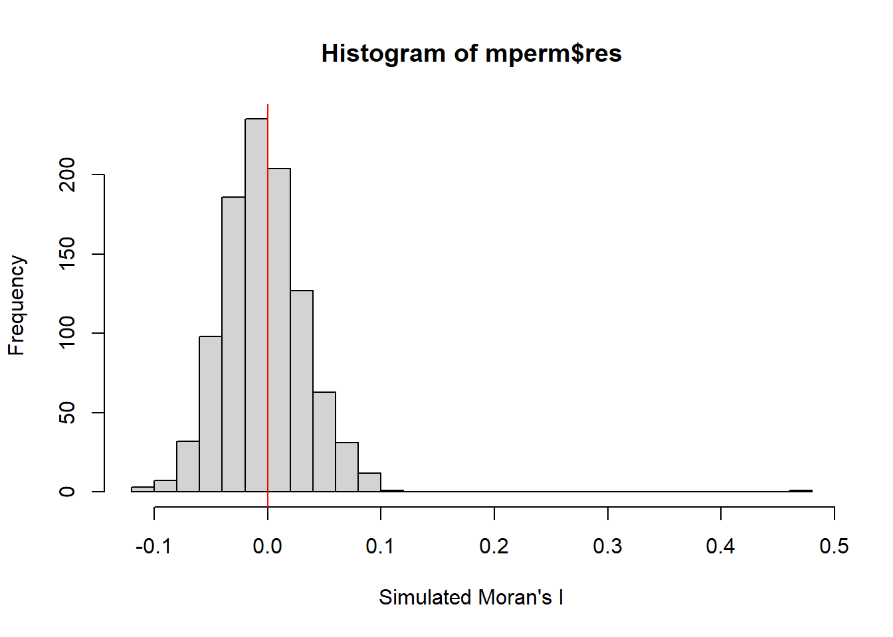
Local Spatial Autocorrelation
From the Gloval Spatial Autocorrelation analysis using Moran’s I, we know that there is a positive spatial autocorrelation for the dengue cases and there are clustering. Now, using the local spatial autocorrelation, we can further investigate which villages are the hotspots and which are the coldspots.
Computing Distance Matrix
Similar to Global Spatial Autocorrelation, we need to compute the weights matrix, but this time, we use the distance. We will use the st_inverse_distance() function from the sfdep package to compute the inverse distance weights. It computes the inverse of the distance between the centroids of the villages, such that villages that are closer together are assumed to be more likely to have similar number of dengue cases, giving them higher weights.
cent_coords <- st_centroid(dengue_village$geometry) |>
st_coordinates() |>
as_tibble()
wm_q <- dengue_village |>
mutate(nb = st_contiguity(geometry),
wt = st_inverse_distance(nb, cent_coords,
scale = 1),
.before = 1)Computing Local Getis-Ord Gi*
Now, let’s compute the local Getis-Ord Gi* statistic using the local_gstar_perm() function from the sfdep package. We will use the distance matrix found in the previous part and set the number of simulations to 999 to find the significance of the local Gi* statistic.
hcsa <- wm_q |>
mutate(local_gi = local_gstar_perm(
num_cases, nb, wt, nsim=999),
.before = 1) |>
unnest(local_gi) |>
select(gi_star, p_sim, VILLCODE, num_cases) |>
mutate(p_sim = replace(p_sim, p_sim > 0.05, NA),
gi_star = ifelse(is.na(p_sim), NA, gi_star))Visualizing the Local Getis-Ord Gi*
Now, let’s visualize the local Getis-Ord Gi* statistic using the tm_shape() and tm_fill() functions from the tmap package. We will use the gi_star as the attribute data and the p_sim as the significance level.
tmap_mode("plot")
tm_shape(hcsa) +
tm_polygons("gi_star",
palette = "-RdYlBu",
style = "cont",
title = "Local Getis-Ord Gi*")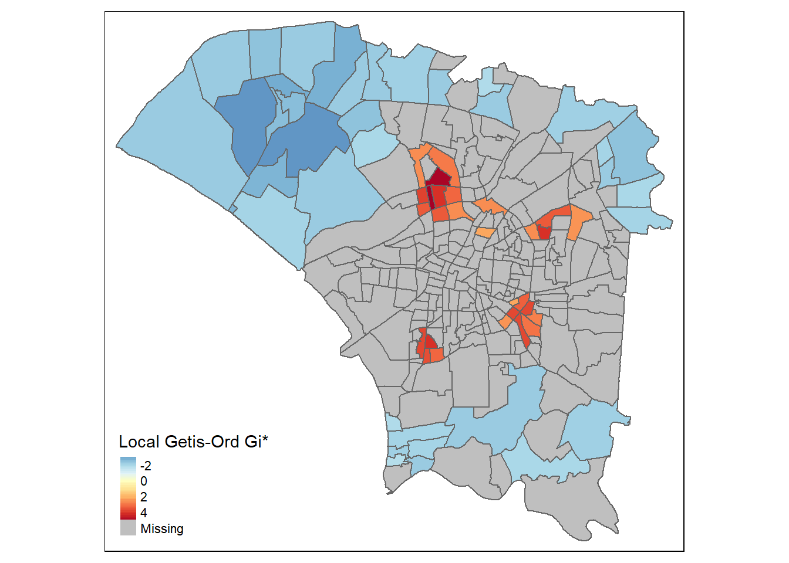
As seen from the plot above, the red areas are the hotspots, meaning that the number of dengue cases in the village is high, and so are the surrounding villages. On the other hand, the blue areas indicate villages that have low dengue cases and is surrounded by villages that also have low dengue cases.
We can also see that most of the coldspots are situated on the outer part of the city, away from the city center. This might be because there are fewer people living in these parts of the city with greater land area, such that the mosquitos have fewer hosts to bite and breed. On the other hand, the hotspots are situated near the city center, where there are more people living in a smaller land area, such that the mosquitos have more hosts to bite and breed. However, it is surprising that the city center itself is not a hotspot. This might be due to the fact that the city center is more developed and has better infrastructure, especially good drainage systems, such that the mosquitos have fewer places to breed.
Emerging Hotspot Analysis
Data Preparation
Create empty dataframe
We need to create an empty dataframe containing all the possible combinations of the village code and the epidemiology week. This is so that the dimension of our dataframe will suit the criterias for a spacetime cube.
vill_code_unique <- unique(tainan$VILLCODE)
epiwk_unique <- unique(dengue$EPIWEEK)
dengue_empty <- expand.grid(VILLCODE = vill_code_unique, EPIWEEK = epiwk_unique) |>
mutate(VILLCODE = as.character(VILLCODE))Combine the sf objects to find cases in each village
We then filter the dengue cases by using the st_join() function from the sf package to make sure that all the cases are located within our interested boundery. We will use the st_contains as the join argument to find the cases that are within the area of interest.
dengue_vill <- st_join(tainan, dengue_sf, join=st_contains)
dengue_vill_summ <- dengue_vill |>
group_by(VILLNAME, VILLCODE, TOWNID, EPIWEEK) |>
summarise(num_cases = n())
saveRDS(dengue_vill, "rds/dengue_vill.rds")
saveRDS(dengue_vill_summ, "rds/dengue_vill_summ.rds")dengue_vill <- readRDS("rds/dengue_vill.rds")
dengue_vill_summ <- readRDS("rds/dengue_vill_summ.rds")Create dataframe to compile all the number of cases in each village per week
Next, we use ‘left_join()’ to join the empty dataframe with the dengue cases dataframe. Then, we use ‘mutate()’ to replace the NA values with 0.
We also drop the geometry column from the dengue_vill_summ dataframe as we only require the attribute data to make the dengue data frame.
dengue_df <- st_drop_geometry(dengue_vill_summ)
dengue_df <- left_join(dengue_empty, dengue_df, by=c("VILLCODE" = "VILLCODE", "EPIWEEK" = "EPIWEEK"))
dengue_df <- dengue_df |>
select(VILLCODE, VILLNAME, TOWNID, EPIWEEK, num_cases) |>
mutate(num_cases = replace_na(num_cases, 0))
tainan_village <- tainan |>
st_drop_geometry() |>
select(VILLCODE, VILLNAME, TOWNID)
dengue_df <- rows_patch(dengue_df, tainan_village, by=c("VILLCODE"))Create spacetime object
To create the spacetime object, we use the spacetime() function from the sfdep package. We will use the dengue_df as the data, tainan as the geometry, VILLCODE as the location column, and EPIWEEK as the time column. We also need to make sure that the location and time columns are inside the dataframe and the geometry dataset.
dengue_st <- spacetime(
.data = dengue_df,
.geometry = tainan,
.loc_col = "VILLCODE",
.time_col = "EPIWEEK"
)Activate the spacetime object into data
To see what the spacetime object is like and what it contains, we can activate the spactime object into data.
activate(dengue_st, "data")glimpse(dengue_st)Rows: 5,160
Columns: 5
$ VILLCODE <chr> "67000350032", "67000270011", "67000370005", "67000330004", …
$ VILLNAME <chr> "青草里", "保安里", "赤嵌里", "大成里", "城北里", "城南里", …
$ TOWNID <chr> "D06", "D32", "D08", "D02", "D06", "D06", "D08", "D06", "D06…
$ EPIWEEK <dbl> 31, 31, 31, 31, 31, 31, 31, 31, 31, 31, 31, 31, 31, 31, 31, …
$ num_cases <int> 0, 1, 0, 0, 0, 0, 0, 0, 0, 0, 0, 0, 0, 0, 0, 0, 4, 2, 34, 2,…Emerging Hotspot Analysis
Check for time-series cube
Before we can do the emerging hotspot analysis, we need to check if the spacetime object is a spacetime cube.
is_spacetime_cube(dengue_st)[1] TRUEComputing Spatial Weights
Now, we compute the spatial weights using the st_contiguity() function from the sfdep package. We will use the include_self() function to include itself in the spatial weights, and the st_inverse_distance() function to compute the inverse distance weights, as we assume that the neighbouring areas are more similar to each other.
coords_center <- st_centroid(dengue_village$geometry) |>
st_coordinates() |>
as_tibble()
dengue_nb <- dengue_st |>
activate("geometry") |>
mutate(nb = include_self(st_contiguity(geometry)),
wt = st_inverse_distance(nb, coords_center,
scale = 1,
alpha = 1),
.before = 1) |>
set_wts("wt") |>
set_nbs("nb")Computing local Gi*
Next, we compute the local Gi* for each week using the local_gstar_perm() function from the sfdep package. We will also set the number of simulations to 999.
gi_star_ehsa <- dengue_nb |>
group_by(EPIWEEK) |>
mutate(gi_star = local_gstar_perm(
num_cases, nb, wt, nsim=999),
.before = 1) |>
unnest(gi_star)Mann-Kendall Test
We then use the Mann-Kendall test to check for the monotonic trend in the series. However, we need to define the null and alternative hypothesis first and set the significance level.
H0: There is no monotonic trend in the series
H1: A trend exists, can be positive, negative, or non-null
Significance level: 0.05
Selecting Study Area
For this analysis, we will focus on selecting 3 villages from different TOWNID to see the different trends across the area of interest.
First, we select the top 5 Towns with the highest number of cases in the first, middle, and last week of the timeframe.
dengue_df |>
filter(EPIWEEK == 31) |>
group_by(TOWNID) |>
summarise(tot_cases = sum(num_cases)) |>
top_n(5, tot_cases) |>
arrange(desc(tot_cases)) |>
pull(TOWNID)[1] "D39" "D01" "D06" "D32" "D04"dengue_df |>
filter(EPIWEEK == 40) |>
group_by(TOWNID) |>
summarise(tot_cases = sum(num_cases)) |>
top_n(5, `tot_cases`) |>
arrange(desc(`tot_cases`)) |>
pull(TOWNID)[1] "D01" "D02" "D04" "D06" "D39"dengue_df |>
filter(EPIWEEK == 47) |>
group_by(TOWNID) |>
summarise(tot_cases = sum(num_cases)) |>
top_n(5, `tot_cases`) |>
arrange(desc(`tot_cases`)) |>
pull(TOWNID)[1] "D01" "D04" "D39" "D02" "D32"We can see that the cases in towns D39, D04, and D01 are the highest in the first, middle, and last week of the timeframe.
So, let’s us take a look closer on the villages that are within the towns D39, D04, and D01.
dengue_df |>
filter(EPIWEEK == 31 & TOWNID == "D39") |>
top_n(5, `num_cases`) |>
arrange(desc(`num_cases`)) |>
pull(VILLNAME)[1] "五王里" "勝利里" "二王里" "復華里" "崑山里" "東橋里" "三合里" "六合里"dengue_df |>
filter(EPIWEEK == 40 & TOWNID == "D39") |>
top_n(5, `num_cases`) |>
arrange(desc(`num_cases`)) |>
pull(VILLNAME)[1] "復華里" "勝利里" "二王里" "中華里" "六合里"dengue_df |>
filter(EPIWEEK == 50 & TOWNID == "D39") |>
top_n(5, `num_cases`) |>
arrange(desc(`num_cases`)) |>
pull(VILLNAME)[1] "東橋里" "西灣里" "三合里" "二王里" "塩行里" "塩興里"We can see here that the number of cases in the 二王里 village of D39 keeps being in the top 5 most number of dengue cases. So, we are interested in finding more on the trend of the dengue cases for this village.
dengue_df |>
filter(EPIWEEK == 31 & TOWNID == "D04") |>
top_n(5, `num_cases`) |>
arrange(desc(`num_cases`)) |>
pull(VILLNAME)[1] "公園里" "成德里" "大豐里" "北門里" "元寶里" "合興里" "振興里"dengue_df |>
filter(EPIWEEK == 40 & TOWNID == "D04") |>
top_n(5, `num_cases`) |>
arrange(desc(`num_cases`)) |>
pull(VILLNAME)[1] "大港里" "大豐里" "北門里" "大和里" "大興里" "小北里"dengue_df |>
filter(EPIWEEK == 50 & TOWNID == "D04") |>
top_n(5, `num_cases`) |>
arrange(desc(`num_cases`)) |>
pull(VILLNAME)[1] "公園里" "北門里" "中樓里" "正覺里" "小北里" "力行里" "開元里" "振興里"
[9] "文元里"The village 北門里 of D04 is the only village that keeps being in the top 5 most number of dengue cases. As such, we want to know more about the trend of the dengue cases happening in this village.
dengue_df |>
filter(EPIWEEK == 31 & TOWNID == "D01") |>
top_n(5, `num_cases`) |>
arrange(desc(`num_cases`)) |>
pull(VILLNAME)[1] "崇學里" "德光里" "崇德里" "大智里" "崇善里"dengue_df |>
filter(EPIWEEK == 40 & TOWNID == "D01") |>
top_n(5, `num_cases`) |>
arrange(desc(`num_cases`)) |>
pull(VILLNAME)[1] "自強里" "東明里" "新東里" "莊敬里" "裕農里"dengue_df |>
filter(EPIWEEK == 50 & TOWNID == "D01") |>
top_n(5, `num_cases`) |>
arrange(desc(`num_cases`)) |>
pull(VILLNAME) [1] "富強里" "裕聖里" "關聖里" "大智里" "崇文里" "崇成里" "崇明里" "大福里"
[9] "崇德里" "大德里" "崇學里" "和平里" "崇善里" "路東里" "虎尾里" "忠孝里"
[17] "崇信里" "德光里" "復興里" "自強里" "文聖里" "富裕里" "龍山里" "新東里"
[25] "泉南里" "東聖里" "東安里" "大同里" "衛國里" "裕農里" "南聖里" "崇誨里"
[33] "東門里" "中西里" "東明里" "圍下里" "東光里" "後甲里" "莊敬里" "小東里"
[41] "大學里" "成大里" "德高里" "仁和里" "東智里"There are no village that always appear in top 5. However, the village 大智里 of D01 appears in the beginning and at the end, while disappearing in the middle. It is interesting to see how the number of cases changes over the course of the timeframe for this village.
From the list of villages above, we then choose one village that reflects a similar trend to the number of cases in each town. We will also plot the time series graph of the number of cases in the village and perform the Mann-Kendall test.
erwang_ehsa <- gi_star_ehsa |>
ungroup() |>
filter(VILLNAME == "二王里") |>
select(VILLNAME, EPIWEEK, gi_star)
ggplot(data = erwang_ehsa,
aes(x = EPIWEEK,
y = gi_star)) +
geom_line() +
theme_light()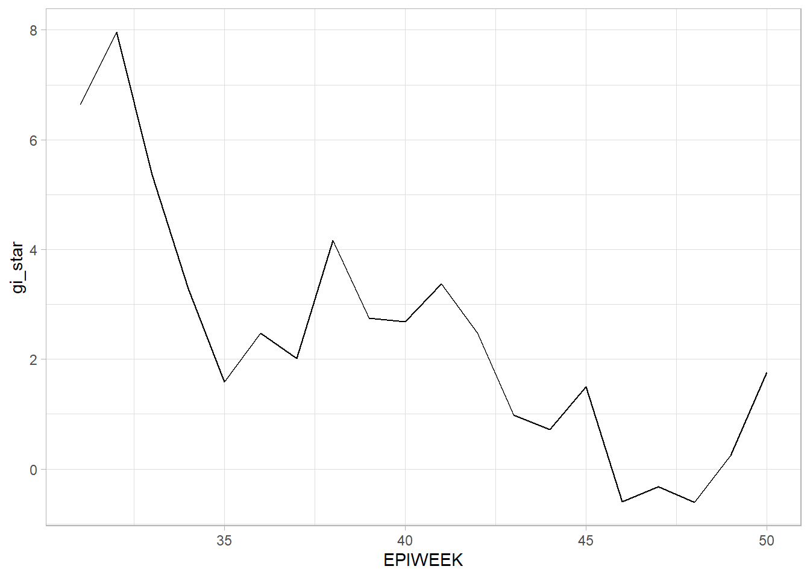
erwang_ehsa |>
summarise(mk = list(
unclass(
Kendall::MannKendall(gi_star)))) |>
unnest_wider(mk)# A tibble: 1 × 5
tau sl S D varS
<dbl> <dbl> <dbl> <dbl> <dbl>
1 -0.621 0.000147 -118 190. 950beimen_ehsa <- gi_star_ehsa |>
ungroup() |>
filter(VILLNAME == "北門里") |>
select(VILLNAME, EPIWEEK, gi_star)
ggplot(data = beimen_ehsa,
aes(x = EPIWEEK,
y = gi_star)) +
geom_line() +
theme_light()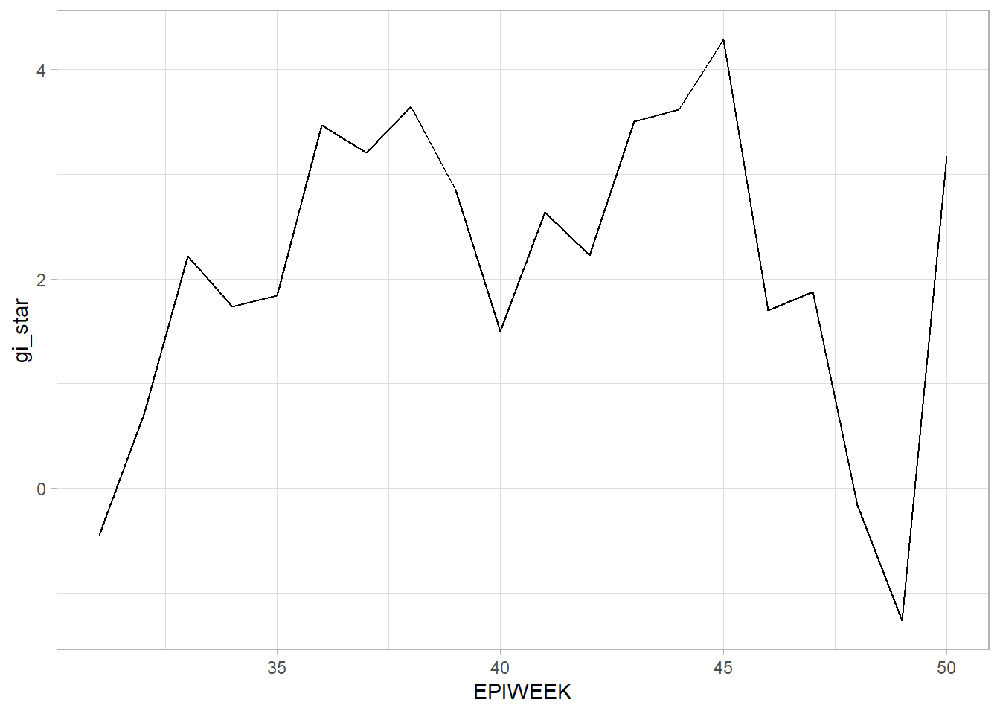
beimen_ehsa |>
summarise(mk = list(
unclass(
Kendall::MannKendall(gi_star)))) |>
unnest_wider(mk)# A tibble: 1 × 5
tau sl S D varS
<dbl> <dbl> <dbl> <dbl> <dbl>
1 0.0947 0.581 18 190. 950dazhi_ehsa <- gi_star_ehsa |>
ungroup() |>
filter(VILLNAME == "大智里") |>
select(VILLNAME, EPIWEEK, gi_star)
ggplot(data = dazhi_ehsa,
aes(x = EPIWEEK,
y = gi_star)) +
geom_line() +
theme_light()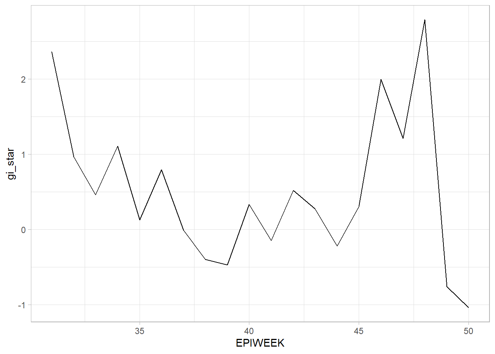
dazhi_ehsa |>
summarise(mk = list(
unclass(
Kendall::MannKendall(gi_star)))) |>
unnest_wider(mk)# A tibble: 1 × 5
tau sl S D varS
<dbl> <dbl> <dbl> <dbl> <dbl>
1 -0.200 0.230 -38 190. 950Analysis
二王里 of D39: From the time-series graph, we can see that the number of cases across the weeks decreases. The Mann-Kendall test also shows that there is a significant decreasing trend in the number of cases. As such, we can reject the null hypothesis that there is no monotonic trend in the series and conclude that the rate of dengue cases happening per week decreases over time.
北門里 of D04: From the time-series graph, we can see that the number of cases are at a constant high until the end. From the result of the Mann-Kendall test, we can see that there is no significant trend in the number of cases. As such, we cannot reject the null hypothesis and conclude that there is no monotonic trend in the series. This means that the rate of dengue cases happening per week fluctuates and there is no trend in the number of dengue cases.
大智里 of D01: From the time-series graph, we can see that the number of cases decreases in the beginning but increases towards the end. True as what the Mann-Kendall test shows, that there is no significant trend in the number of cases. As such, we cannot reject the null hypothesis and conclude that there is no monotonic trend in the series. This means that the number of dengue cases fluctuates from time to time.
EHSA for all the villages
Now, let us do the emerging hotspot analysis for all the villages in Tainan City using the emerging_hostpost_analysis() function from sfdep package.
set.seed(19)
ehsa <- emerging_hotspot_analysis(x = dengue_st,
.var = "num_cases",
k = 1, nsim = 99)
saveRDS(ehsa, "rds/ehsa.rds")ehsa <- readRDS("rds/ehsa.rds")
count(ehsa, classification) classification n
1 consecutive coldspot 5
2 consecutive hotspot 7
3 new hotspot 3
4 no pattern detected 6
5 oscilating coldspot 53
6 oscilating hotspot 110
7 persistent coldspot 6
8 sporadic coldspot 36
9 sporadic hotspot 32The count table shows how many villages are in each classification. We can see that there are 5 villages that are persistent coldspots, 109 villages in the oscilating hotspot, and 1 village as a new coldspot.
Plot the result of emerging hotspot analysis
Let us see the distribution of the different classifications of the villages in Tainan City.
ggplot(data = ehsa,
aes(x = classification)) +
geom_bar(fill="light blue")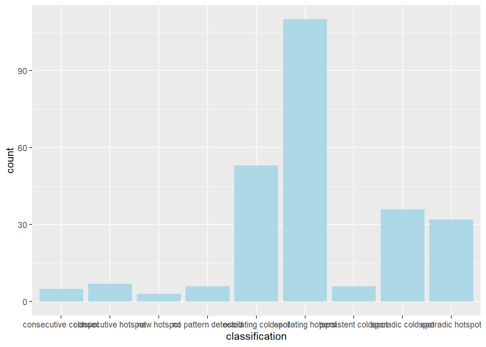
To see the locations of the different classifications of the villages, we will plot the map of Tainan City and overlay the emerging hotspot analysis result on the map.
First, we need to combine the emerging hotspot analysis result with the Tainan geospatial data using the left_join() function from the dplyr package. We also need to remove the insignificant rows by replacing the rows that has p-value more than 0.05 with NA.
tainan_ehsa <- left_join(ehsa, tainan, by=c('location'='VILLCODE')) |>
mutate(`p_value` = replace(`p_value`, `p_value` > 0.05, NA),
`classification` = ifelse(is.na(`p_value`), NA, `classification`))Since the above dataset is still in a dataframe format, we need to change it into a sf object using the st_as_sf() function from the sf package to be able to plot it using the tmap package.
tainan_ehsa_sf <- tainan_ehsa |>
select(location, tau, p_value, classification, geometry)
ehsa_sf <- st_as_sf(tainan_ehsa_sf)
tmap_mode("plot")
tm_shape(ehsa_sf) +
tm_fill(col="classification", palette="Paired") +
tm_borders()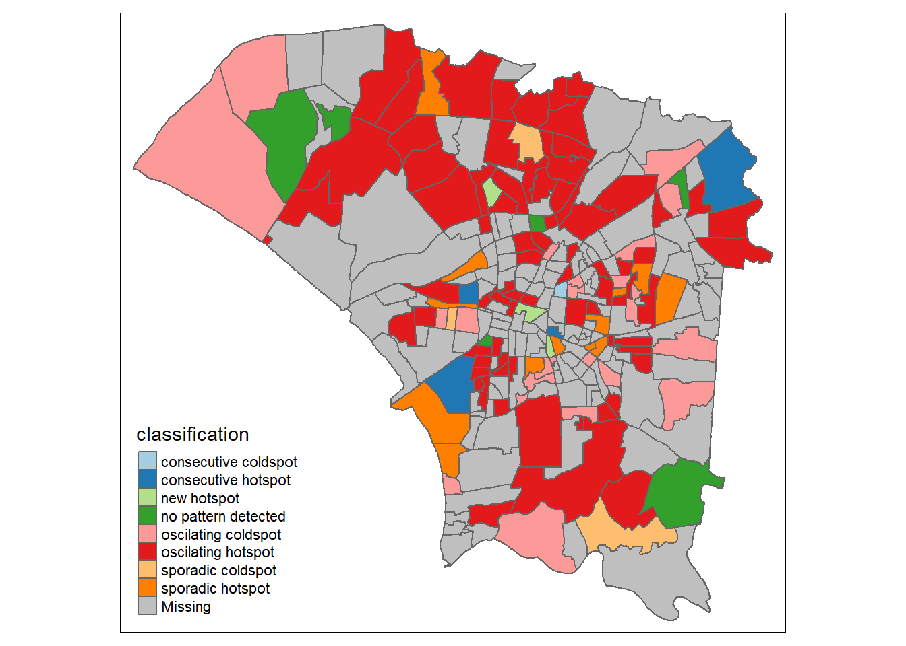
From the map above, we can see that most of the villages are oscillating hotspot, meaning that they are statistically significant hotspot at the end of the timeframe although they are statistically significant coldspot at the beginning of the timeframe. Most of these villages are located on the D06 town. This might be because as more mosquitoes breed, the range of reach for these mosquitoes widen, especially to the more rural part of the city.
In conclusion, based on the analysis, we can say that the dengue cases in Tainan City are spatially and spatio-temporally correlated. As seen from the HCSA, there are hotspot and coldspot clusters identified. Moreover, the ESHA shows that though the number of cases in many of the village fluctuates we can still see a trend to the number of dengue cases happening in each village.